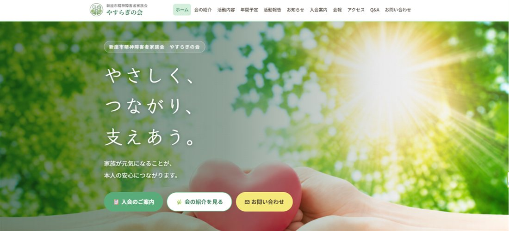

制作実績
制作実績・制作サンプル
実際に制作したホームページと、福祉事業所向けの制作サンプルをご紹介します。
実績
制作実績
実際にご依頼いただき、公開・運用しているホームページです。

クリックで拡大代表的な制作実績
家族会・地域福祉団体新座市精神障害者家族会「やすらぎの会」ホームページ
初めての方にも会の雰囲気や活動内容、参加方法が伝わるよう、会の紹介・年間予定・活動報告・入会案内・お問い合わせを整理した情報発信サイトです。
制作サンプル
制作サンプル
こちらはご依頼実績ではなく、福祉事業所のホームページ制作をイメージしていただくためのサンプルです。

制作サンプル
就労継続支援B型事業所向けサンプル
見学・体験申込み、作業内容、支援内容、求人導線を意識したサンプルホームページです。
想定する導入効果
- 見学・体験申込みにつながる導線を整備
- 利用者・ご家族・支援機関に事業所の魅力を発信
- 作業内容・工賃・支援内容を見える化
- Google検索から新規利用者との接点を増やす
- 求人・採用にも活用できるホームページへ